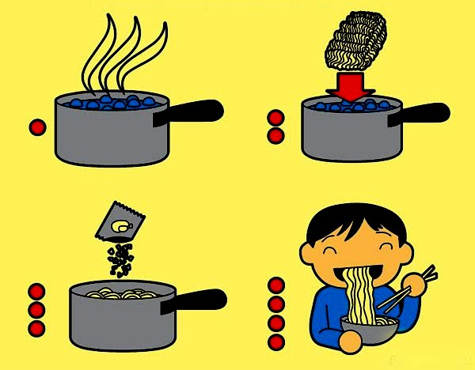

Receita
Miojo
Ingredientes
Macarrão instâneo
Água
Tempero
Instruções
Coloque a água na panela para ferver.
Ao ferver jogue o miojo
Espere 3 minutos até ele ficar bem soltinho
Desligue o fogo
Misture o tempero e sirva-se.